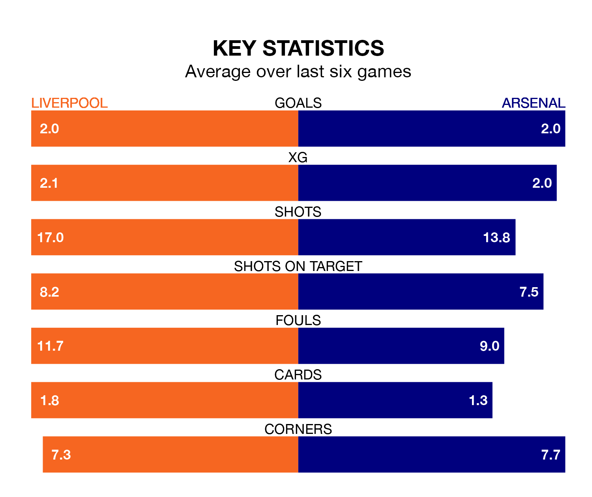

The Premier League's top two sides face each other at Anfield in Saturday's late kick-off, when second-placed Liverpool host Arsenal.
Liverpool have picked up 11 wins and five draws from 17 games so far this season, and sit one point below the visitors going into the 5.30pm match.
The Gunners, meanwhile, have won 12 and drawn three, picking up 39 points.
With 36 goals in 17 games so far this season, Liverpool are the league's joint-third-highest scorers with 2.1 goals per game. And they are conceding fewer than average, letting in 15 goals at a rate of 0.9 per game.
Arsenal are also above average scorers, with 2.1 goals per game, compared to a league average of 1.5. They have conceded 0.9 goals per game.
In Mohamed Salah, the Reds have one of the league's sharpest shooters so far this season. He has notched 11 goals in 17 appearances, to sit second in the scoring charts.
The Gunners' top scorers, with five goals in 16 games each, are Edward Nketiah and Bukayo Saka.
In the last 10 years, Liverpool and Arsenal have played each other on 25 occasions. Liverpool won 11 of them, Arsenal four, and they drew 10 times.
On average, the Reds scored 2.4 goals and the Gunners 1.4 in those matches.
Their last meeting was on April 9, when they played out a 2-2 draw.
The hosts are in good form in the Premier League, with four wins and two draws from their last six games.
But with five wins and one loss over that period, the away side's form is even better – they have taken 15 points from 18, compared to Liverpool's 14.
Liverpool's last match was on Sunday, a 0-0 draw against Manchester United.
Arsenal beat Brighton and Hove Albion 2-0 last time out, also on Sunday, with Gabriel Jesus and Kai Havertz on the scoresheet.
